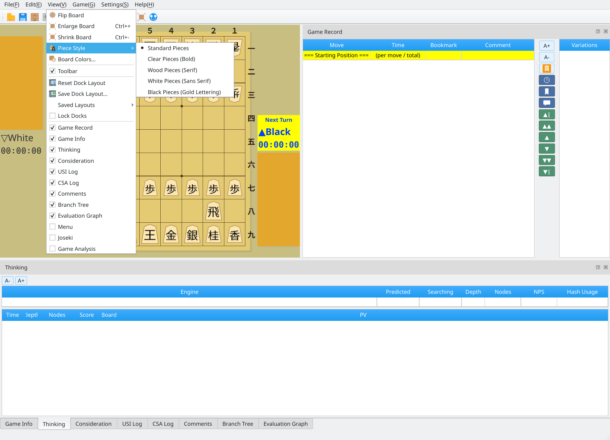
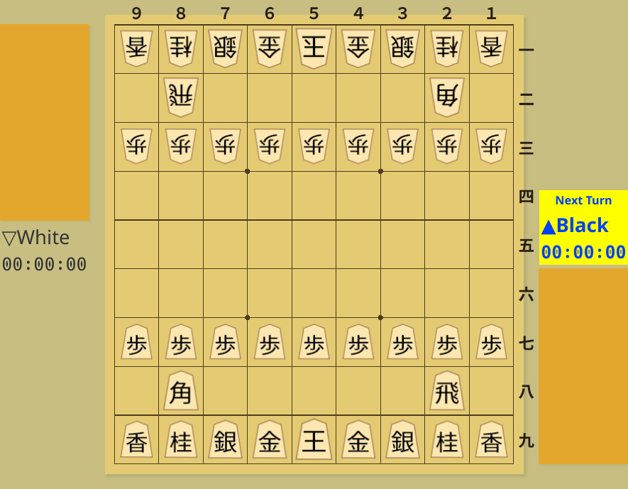
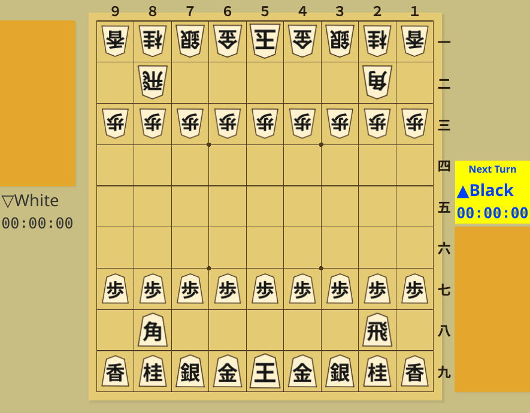
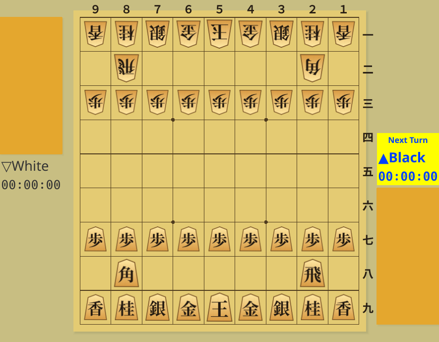
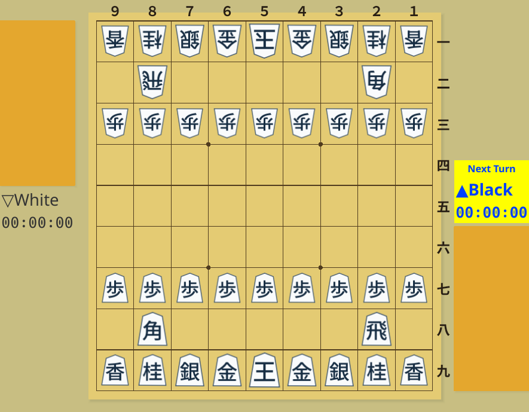
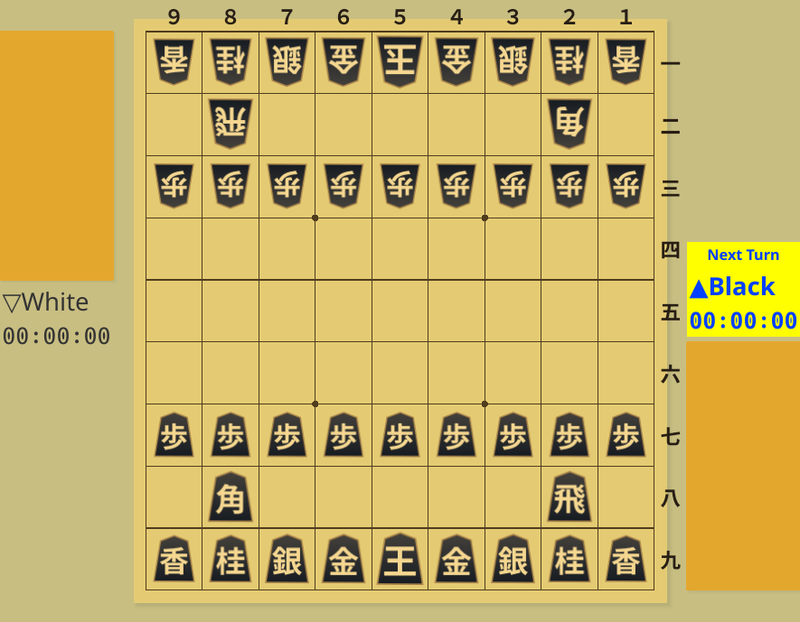

Piece Styles
Choose from five designs for readability and personal preference
Screenshots were captured on Linux with the English interface.
Change the Piece Style
Change your piece design at any time from the View menu
Open View → Piece Style
Choose View → Piece Style to see the five available designs. A check mark identifies the current style. Click a screenshot to view it at its original size.
{kind=link}

Choose a design from the Piece Style submenu
Select a Piece Style
Selecting a style immediately updates pieces on the board and in hand. It also applies to boards in other windows, such as the principal variation display, and is retained after restarting.
To match your board colors to the pieces, open Board Colors and choose a recommended palette. Changing the piece style alone keeps the existing colors.
Five Piece Styles
Compare the designs using the same starting position and default board colors
{kind=link}

Standard Pieces: The default piece design.
{kind=link}

Clear Pieces (Bold): Bold lettering makes the piece types easier to read.
{kind=link}

Wood Pieces (Serif): Wood grain texture with serif lettering.
{kind=link}

White Pieces (Sans Serif): White pieces with sans-serif lettering.
{kind=link}

Black Pieces (Gold Lettering): Black pieces with contrasting gold lettering.